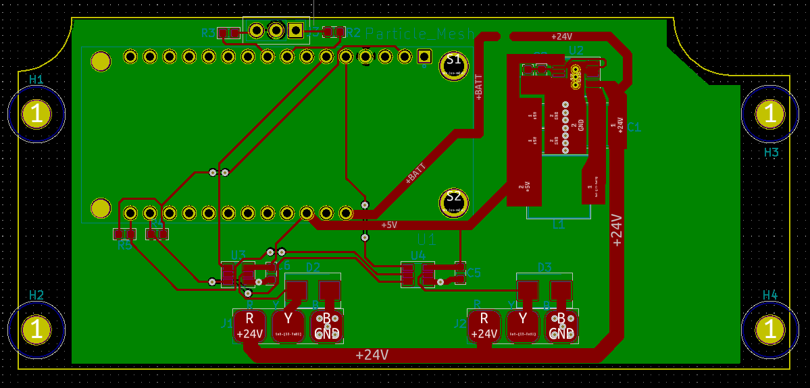
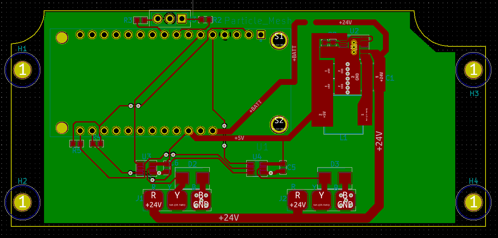
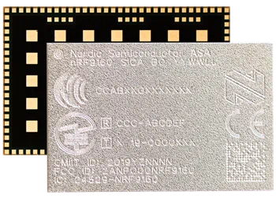
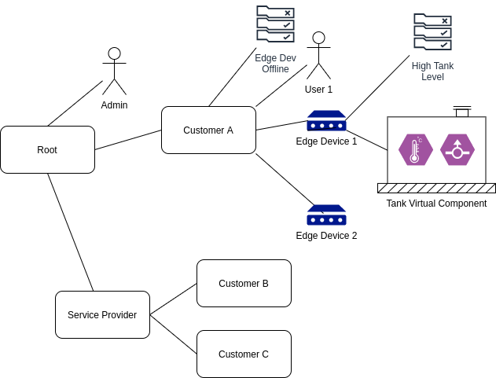

Cliff Brake


| Cloud | Compute @ Edge |
|---|---|
| Connectivity | Devices |
| Open Source |
 |
 |
|---|---|
 |
   |
 |
|
 |
 |
 |
|---|---|
 |
 |
| CAT-M |  |
|---|---|
 |
NB-IOT |



 |
|
|---|---|
 |
|
 |
 |
 |
|
 |
Interesting solutions are the ones where the cost savings quickly pays for the solution.
| HVAC | Machine Monitoring |
|---|---|
| Infrastructure | Agriculture |
Areas of cost savings:

type Sample struct {
// ID of the sensor that provided the point
ID string
// Type of point (voltage, current, key, etc)
Type string
// Index is used to specify a position in an array such as
// which pump, temp sensor, etc.
Index int
// Time the point was taken
Time time.Time
// Duration over which the point was taken. This is useful
// for averaged values to know what time period the value applies
// to.
Duration time.Duration
// Average OR
// Instantaneous analog or digital value of the point.
// 0 and 1 are used to represent digital values
Value float64
// Optional text value of the point for data that is best represented
// as a string rather than a number.
Text string
// statistical values that may be calculated over the duration of the point
Min float64
Max float64
}type Device struct {
ID string
Config DeviceConfig
State DeviceState
CmdPending bool
SwUpdateState SwUpdateState
Groups []uuid.UUID
Rules []uuid.UUID
}
// DeviceState represents information about a device that is
// collected, vs set by user.
type DeviceState struct {
Version DeviceVersion
Ios []Sample
LastComm time.Time
SysState SysState
}